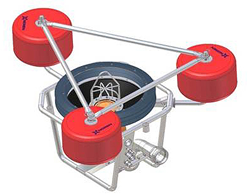
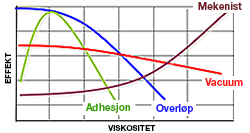
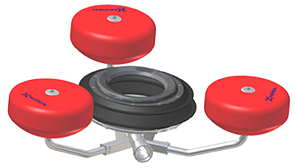
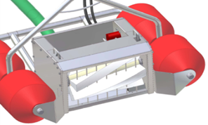
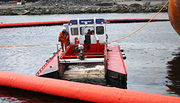
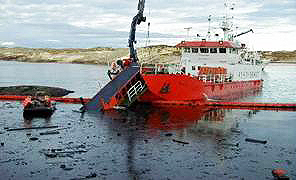

SKIMMER
Hvordan ta opp olje fra sjø? På denne utfordring har produsentene av oljeberedskapsmateriell svart med å utvikle forskjellige former for oljeopptakere, eller ”skimmere” som de også kalles.
Ved et akuttutslipp av olje til sjø er det av største viktighet at innsatspersonell starter med opptaking av oljen så raskt som dette er overhodet mulig. Det er enormt ressursbesparende både økologisk og samfunnsøkonomisk om oljen kan samles og tas opp før den når land.
Stikk aldri hånden ned i opptaker eller pumpe for å ta bort søppel når disse er tilkoblet!En oljeopptaker er en mekanisk innretning for å ta opp olje fra sjø med et minimum av vanninnhold. Det finnes forskjellige typer av opptakere som er beregnet på forskjellige oljetyper, viskositet (seighet) og bruksområde. De fleste opptakere er konstruert for å brukes inne i en oljelense hvor en har muligheter til å bygge opp et tykkere oljelag slik at opptakeren har optimale arbeidsforhold. Oljeopptakere bør opereres av personell som er trent på dette.

Valg av skimmertype

Overløpsskimmere
- Stor kapasitet
- Kan ta med mye vann

Adesjonsskimmere
- Børst, plater, tromler, band
- God separasjonsevne

Hydrodynamiske opptakere
- Vannjet, ”Slurpen”

Mekaniske opptakere
- HiVisc, HiWax, Sanvikbandet
